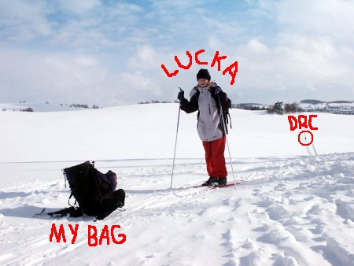

Tri Studne – cross country skiing
It started like “Oh, there will be many people there!”, but then, eh…

Well, the weather was nice enough, snow & temperature also ok, the only problems being lack of machine made trails and Drc’s headache (which made us leave sooner than we initially planned).
One thought on “Tri Studne – cross country skiing”
Drc 2006-02-23
Nadavej tem co tam nejeli/y
Add your comment — How does this work?